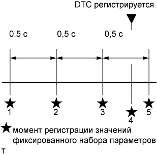

DTC P1608 Недостаток мощности двигателя |
| Режим поездки при обнаружении DTC | Условие обнаружения DTC | Неисправный участок |
| - | При нажатой до упора педали акселератора мощность двигателя падает приблизительно на 4-10 с вследствие отказа узла в системе впуска или выпуска, топливной системе, системе охлаждения, либо неисправности одной из этих систем. (логика диагностирования за 1 поездку) |
|
|  |
| 1.СЧИТАЙТЕ КОДЫ DTC (ЗАПИШИТЕ СОХРАНЕННЫЕ КОДЫ DTC И ДАННЫЕ ФИКСИРОВАННОГО НАБОРА ПАРАМЕТРОВ (ПРОЦЕДУРА 1)) |
Подсоедините портативный диагностический прибор к DLC3.
Включите зажигание (IG) и портативный диагностический прибор.
Войдите в следующие меню: Powertrain / Engine and ECT / DTC.
Запишите сохраненные коды DTC и данные фиксированного набора параметров.
| ДАЛЕЕ | |
| 2.ПРОВЕРЬТЕ, НЕ ВЫВОДЯТСЯ ЛИ ДРУГИЕ DTC (ПОМИМО DTC P1608) |
Подсоедините портативный диагностический прибор к DLC3.
Включите зажигание (IG) и портативный диагностический прибор.
Войдите в следующие меню: Powertrain / Engine and ECT / DTC.
Считайте коды DTC.
| Результат | Следующий шаг |
| P1608 выводится | А |
| P1608 и прочие коды DTC выводятся | B |
|
| ||||
| А | |
| 3.ОПРЕДЕЛИТЕ ПРИЧИНУ НЕИСПРАВНОСТИ (ПРОВЕРЬТЕ ДАННЫЕ ФИКСИРОВАННОГО НАБОРА ПАРАМЕТРОВ И ЗАФИКСИРОВАННЫЕ МГНОВЕННЫЕ ЗНАЧЕНИЯ) |
Определите причину возникновения проблемы на основании данных фиксированного набора параметров, записанных в процедуре 1.
| Пояснение значений параметров режима Data List | Возможная причина | Неисправный участок | Замечание по диагностике |
| "MAF Low" в данных фиксированного набора параметров имеет значение ON (ВКЛ) | Недостаточен объем воздуха на впуске, проходящего через датчик массового расхода воздуха, поэтому объем впрыска топлива остается сниженным |
|
|
| Пояснение значений параметров режима Data List | Возможная причина | Неисправный участок | Замечание по диагностике |
| "Boost Pressure Low" в данных фиксированного набора параметров имеет значение ON (ВКЛ) | Фактическое давление наддува меньше заданного, поэтому объем впрыска топлива остается сниженным |
| Возможные неисправные участки можно уточнить, проверив параметр "MAF/Estimate MAF Ratio", когда "Boost Pressure Low" в данных фиксированного набора параметров имеет значение ON (ВКЛ)
|
| Пояснение значений параметров режима Data List | Возможная причина | Неисправный участок | Замечание по диагностике |
| "MAF/Estimate MAF Ratio" в данных фиксированного набора параметров не менее 1,5 | Воздух, проходящий через датчик массового расхода воздуха, имеет утечку, и измеренный объем воздуха на впуске меньше фактического. | Утечка воздуха на впуске вследствие отсоединения впускного патрубка или трещин между турбонагнетателем в сборе и промежуточным охладителем в сборе, либо между промежуточным охладителем в сборе и впускным коллектором. |
|
| "MAF/Estimate MAF Ratio" в данных фиксированного набора параметров менее 0,5 | В двигатель подается воздух, который не проходит через датчик массового расхода воздуха, и фактический объем воздуха на впуске меньше измеренного. | Проникновение воздуха вследствие отсоединения впускного патрубка или трещин между турбонагнетателем в сборе и промежуточным охладителем в сборе, либо между промежуточным охладителем в сборе и впускным коллектором. |
| Пояснение значений параметров режима Data List | Возможная причина | Неисправный участок | Замечание по диагностике |
| "Common Rail Pressure Low" в данных фиксированного набора параметров имеет значение ON (ВКЛ) | Давление в топливной системе Common Rail остается ниже заданного. |
|
|
| Пояснение значений параметров режима Data List | Возможная причина | Неисправный участок | Замечание по диагностике |
| "Engine Coolant Temp High" в данных фиксированного набора параметров имеет значение ON (ВКЛ) | Температура охлаждающей жидкости остается высокой (перегрев), и объем впрыска топлива остается сниженным. |
| Система охлаждения с радиатором в сборе |
| ДАЛЕЕ | ||
| ||